← 返回阅读库 · 原论文目录
论文讲解阅读文档 · 内容生成 · v009
VQ-VAENeural discrete representation learning[1711.00937]
视频时长 00:16:52；讲解文字 7,175 字符；提取讲解画面 77 张。按视频原顺序阅读，每段文字保留时间戳。
文字来自整段视频的自动语音转写，按自然停顿分段，并与 PPT / 论文页面 / 演示画面对齐。未将讲解压缩为摘要；术语、数字和口述公式请结合画面及原论文核对。 阅读稿已校正规范部分明确术语误识别；原始逐字稿和每处修改记录另行保留。
讲解画面为源视频截图（640×360），不是可编辑 PPT 文件。全片按每秒 2 帧扫描内容变化，逐步展开页保留；连续动画保留代表画面。清晰度受源视频限制。
下载完整资料包 · 含离线 HTML、PDF、Word、全部 PPT 画面和字幕。
原论文与材料
Neural Discrete Representation Learning · 下载完整 PDF（11 页）
按时间阅读
00:00:00–00:00:22 · 画面 001
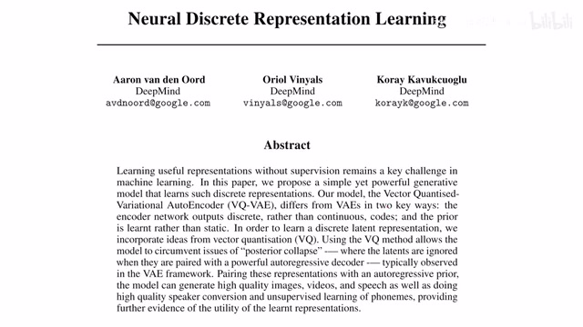
00:00:00–00:00:22 · 画面 001大家好啊，今天我们来介绍 neural discrete representation learning，是著名的 VQVAEVector Quantized Variational Autoencoder。那么在这之前呢，如果你对 VAE 不熟悉，那非常推荐呢你去先观看我们之前的关于 VAE 的介绍。然后呢，我们就来开始研究本文和这个标准的 VAE 它的主要的区别。那么本文的 intuition 呢，在于 VAE 它存在一个问题就是这个 Posterior Collapse。
00:00:22–00:02:21 · 画面 002
00:00:22–00:02:21 · 画面 002那更确切的来说呢，就是我们的这 Decoder 它很强，它随便用点什么噪声对吧，就可以生成一张逼真的图像，它完全不顾及我们的从前面 Decoder 过来这个 Latent 这些东西，就 Latent Representation 这些东西，它完全不顾及。那么这种现象呢，在使用连续变量作为 Latent 在这个 VAE 里面呢，是很常见的。或者你换个角度想，你先给我干对不对，它不就是用这个 Noise 对吧，作为输入输出一张逼真的图像所以呢，本文呢，就要解决这个问题。那解决的方法呢，就是这个 vector quantization。那这里撇开 vector，我们先看 quantization 量化，量化好理解嘛，就是我们原来一个连续的模拟量对吧，我要把它变成数字量，就是用有限的这个二进制的位置来表示它嘛。那现在的问题呢，在于假如说我只有一个这个模拟量，我需要用一定位数去表示它，这完全 OK。但是呢，现在假如说我们有很多个这样的模拟量，我们都需要表示
比如说我现在不要是一个这个模拟量，我有 32 个 bit，那我是不是对于每一个这个模拟量都要用 32 个 bit 去编码呢？这样直接做当然是可以的，但是它会消耗大量的空间。那怎么办呢？我们想到了之前我们在拉普拉斯金字塔里面介绍过，在这个视频压缩的这个 NERV 里面介绍过，我们可以先编码一个 base 或者 average。
把这个值先放在这里，它比如说我用 32 个 bit 编好了，然后呢，我去编码其他的所有的模拟量跟这个 average 跟这个 baseline 它的差值。那这个差值呢，因为它的这个绝对的数量级比我们的这个 baseline 要少很多，所以呢，我们可以用更小的 bit 去描述每一个差值这样子就达到了节约编码空间的目的，这个在 N 语言里面叫差分编码或者增长编码。那么现在我们把这个模拟量拓展成一个 vector，看到这边，假如说我们是一个 2D 的 vector，然后我们看到这些所有的星星就是我们需要标记的数据，需要编码的这些数据。那么同样的，我们如果直接存这些数据，它是非常占用空间的，一个可行的解决方案就是我们去维护这些红色的点
00:02:21–00:02:22 · 画面 003
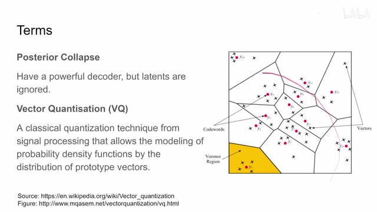
00:02:21–00:02:22 · 画面 00300:02:22–00:03:14 · 画面 004
00:02:22–00:03:14 · 画面 004红色点它叫 code words，或者你叫它 prototypes 都可以，我们先记录一个完整的它，然后剩下呢，我们只需要记录其他这些 vector 和这个 prototype 他们之间的这个距离就可以了。那么这个距离呢，因为它的数量级呢比直接去记录它的绝对的位置要小很多，所以呢，所以呢，我们可以用更少的 bit 去记录它那么当然呢，虽然这个值很小，但是如果你想保存这个差值呢，它还是需要占用空间的。而且很多情况下呢，我并不关心说每一个这个 sample 它具体的值是什么，相对的呢，我只关心整个这个区域这些 sample 它们的概率分布一些统计学上的信息
00:03:14–00:03:16 · 画面 005
00:03:14–00:03:16 · 画面 00500:03:16–00:03:34 · 画面 006
00:03:16–00:03:34 · 画面 006那这就好办了对吧，我们也不用存每一个 sample 跟这个 prototype 之间它们的距离了，我们只需要把这个 prototype 让它代表一定数量这个 sample，然后呢，我就可以通过这个 prototype 它的这个分布去描述所有 sample 它这个分布。那么从概率分布的角度来讲呢，这一片的概率密度呢，就被这一个 prototype 所代表。那么下面的问题很自然的就是我们该怎么样去找这个 prototype
00:03:34–00:03:35 · 画面 007
00:03:34–00:03:35 · 画面 00700:03:35–00:04:08 · 画面 008
00:03:35–00:04:08 · 画面 008其实最简单的方法呢，就非常类似于 K-means，它不完全相等啊，但是它的思路非常像。就是说我现在初始化好了几个这个 prototype 之后呢，我去找它附近的样本，然后呢根据这几个样本，比如说平均值吧，然后呢把我们的这个 prototype 往那个方向移动，然后呢不断的去迭代。这样子呢，到最后自然而然的我们的 prototype 呢，它的整个这个它的整体的分布呢，就能够描述我们这个原始样本它的这个分布的这个密度，是一个非常经典的方法。
00:04:08–00:04:10 · 画面 009
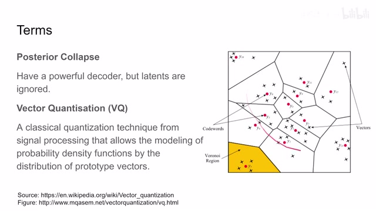
00:04:08–00:04:10 · 画面 00900:04:10–00:04:16 · 画面 010
00:04:10–00:04:16 · 画面 010关于它的更多信息呢，
00:04:16–00:04:18 · 画面 011
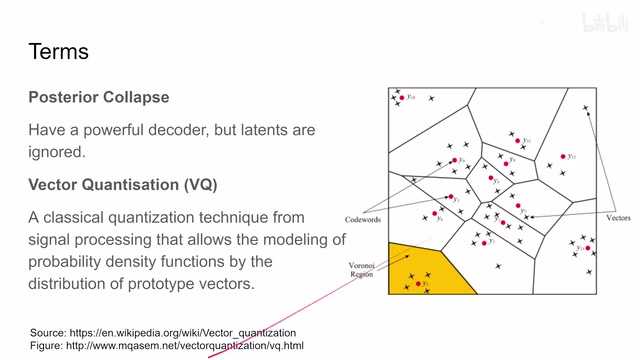
00:04:16–00:04:18 · 画面 011你可以在这些网站里面查看。
00:04:18–00:04:23 · 画面 012
00:04:18–00:04:23 · 画面 012那么这个东西究竟要怎么跟 VAE 结合呢？其实非常简单
00:04:23–00:04:28 · 画面 013
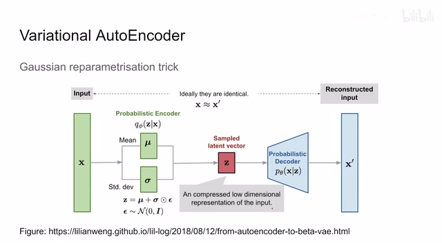
00:04:23–00:04:28 · 画面 013我们来看到这个 Variational Auto Encoder它设计成这样呢是因为我们想用这个高深 Distribution，
00:04:28–00:04:30 · 画面 014
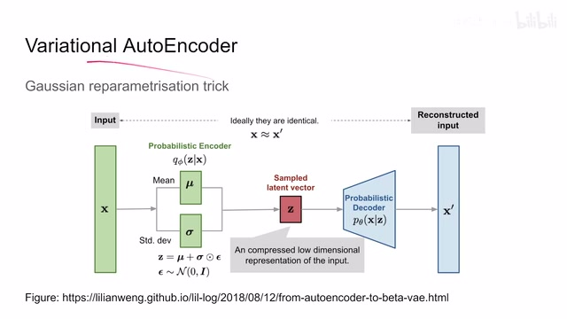
00:04:28–00:04:30 · 画面 014它的一些好的性质。
00:04:30–00:05:00 · 画面 015
00:04:30–00:05:00 · 画面 015那么我通过很多个这些高深 Distribution，它们的分布的不同，就可以描述我们原始的这个输入的信号。比如说图像或者是音频。所以呢对于 VAE 来说呢我们是用很多个连续的变量，去描述我们的 Latent Space那么很自然的我们就想到，除了这种连续的变量，来描述我们的 Latent Space我们能不能用很多个离散的变量？
去描述我们的 Latent Space 呢当然也是可以的这里我们来到本文提出的，
00:05:00–00:05:25 · 画面 016
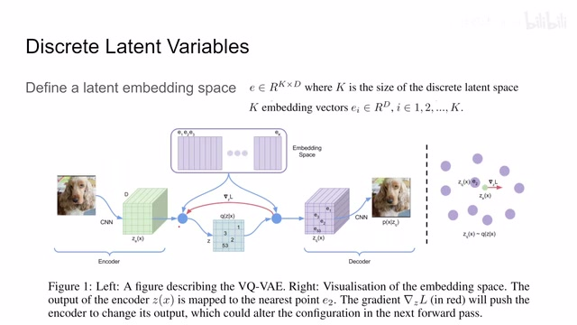
00:05:00–00:05:25 · 画面 016Discrete Latent Variables首先我们可以定义一个 Latent Embeddings，比如说它的维度是 k 乘以 d，那么 k 就是我们离散变量的数量，d 就是每一个离散变量，它的长度那么这里我们既然有 k 的向量，我们就编好号对吧那么到后面我们就要用 k 向量的，不同的排列组合去描述我们输入的图像。
00:05:25–00:06:12 · 画面 017
00:05:25–00:06:12 · 画面 017那么具体来看编码的过程，我们输入进一个图像，我们放到 CNN 里面它提出一个 tensor 来那么现在经过 encoder 出来的，原始的编码我们叫它 ze那么对这个 zx 来说呢，你可以想象成它是一个 h 乘 w 这样的个数的这个向量。那么对其中的每一个向量来说呢，在我们的 embedding space 里面查找跟它最相近的这个 embedding vector。比如说这个向量它查到了最近的是这个 1，这个向量最近的是 2 对吧？这样依次类推。然后呢，我们用这个 embedding vector 给它组合成一个新的 tensor，它叫做 zq。
用他呢送到我们的 decoder 里面去解除这个原始的图像来。那这个呢就像你们听我扯犊子啊，这个输入的就是这个犊子。那我的发音也不清楚，说话的思路呢也不是很清晰啊。他的编码出来呢就是这个，但是呢这个编码呢也不是完全不靠谱啊。你稍加思索发现啊，原来说的是这个东西啊，就是在我们这个 embedding space 里面。
00:06:12–00:06:13 · 画面 018
00:06:12–00:06:13 · 画面 01800:06:13–00:06:30 · 画面 019
00:06:13–00:06:30 · 画面 01900:06:30–00:06:31 · 画面 020
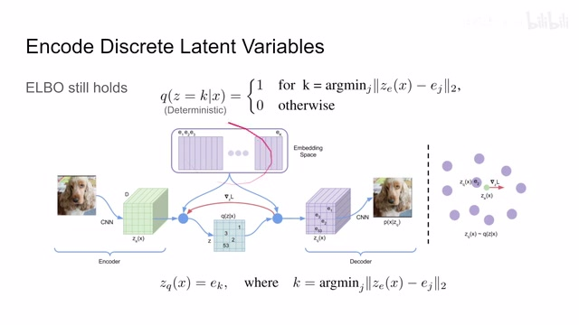
00:06:30–00:06:31 · 画面 02000:06:31–00:06:48 · 画面 021
00:06:31–00:06:48 · 画面 021在你的记忆当中发现，哎原来有这些东西哎，他们能够对应上。那最后呢你把这些东西组合起来就成了你自己的理解了。于是呢你也得到了一个独子。那根据起来看的编码的过程 q，这个 encoder given x 我们的输入，它的输出呢全部集中在这个 z 等于 k 的这种情况下，而对于其他的值呢都等于 0。所以呢它是一个 deterministic 的这样一个过程。
00:06:48–00:06:49 · 画面 022
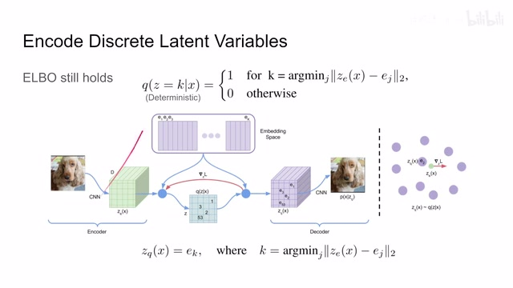
00:06:48–00:06:49 · 画面 02200:06:49–00:07:17 · 画面 023
00:06:49–00:07:17 · 画面 023那注意呢这里他他为了简化我们 z 呢，你把它理解成一个 vectork 呢，就是距离这个 ze 这个东西最近的这个 vector 他的这个 index。我们之后编码出来的这个 vector 也就是 zq。你可以看到这里 zq 呢就等于这个 ek ，k 是我们这个 index 对吧，就直接等过来了。那么在这个过程中呢，我们的 elbo 它依然是成立的，我们依然可以写成 loss 加上 reconstruction 加上这个 regularization 这种形式。只是呢我们的解法呢会有一点不同，因为我们并没有使用这个 gaussian distribution。那么这个呢就是一个从直觉上来看编码的过程。
00:07:17–00:07:18 · 画面 024
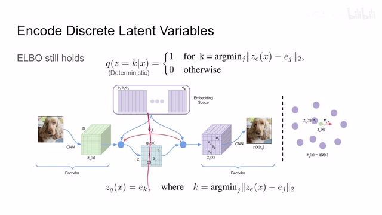
00:07:17–00:07:18 · 画面 02400:07:18–00:07:36 · 画面 025
00:07:18–00:07:36 · 画面 02500:07:36–00:07:37 · 画面 026
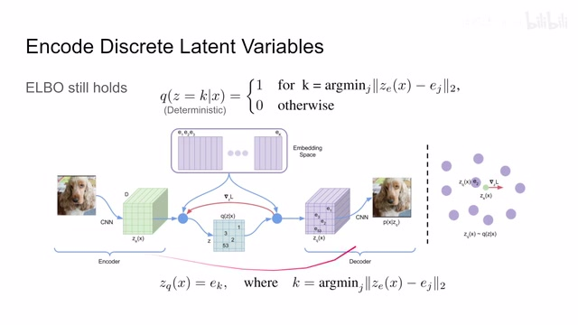
00:07:36–00:07:37 · 画面 02600:07:37–00:07:48 · 画面 027
00:07:37–00:07:48 · 画面 027那为什么说这个东西是离散的编码呢？你想我现在要怎么样去保存一张图像呢？我只需要保存这个 embedding space 里面的所有这个 vector，然后呢记录一下这个图像它每一个位置用到了哪一个 vector，就是这些 vector 的 index 记录下来。那么有了这两样呢，我们就可以通过这个 decoder 来把这个图像给它恢复出来了。那么这个呢就是核心的这个 discrete latent variables。
00:07:48–00:07:49 · 画面 028
00:07:48–00:07:49 · 画面 02800:07:49–00:07:58 · 画面 029
00:07:49–00:07:58 · 画面 02900:07:58–00:07:59 · 画面 030
00:07:58–00:07:59 · 画面 03000:07:59–00:08:05 · 画面 031
00:07:59–00:08:05 · 画面 03100:08:05–00:08:06 · 画面 032
00:08:05–00:08:06 · 画面 032那么接下来呢我们就要看为了训练这样一个模型我们需要用哪些 loss 那首先根据 elbo 我们会有 reconstruction loss 和 regression loss 但是呢在本文中呢我们把这两个 loss 退化成了只有一个 reconstruction loss 具体的原因呢我们后面马上会讲而这个 loss 呢我们更新 encoder 和 decoder 两个部分共同的去优化这个 loss 那这个时候有朋友就说了
00:08:06–00:08:11 · 画面 033
00:08:06–00:08:11 · 画面 03300:08:11–00:09:00 · 画面 034
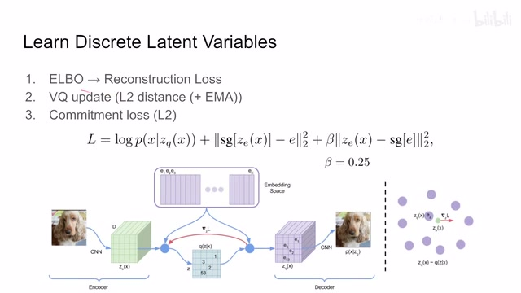
00:08:11–00:09:00 · 画面 034你中间去查最近零的操作它怎么可以传递梯度这里作者用了一个非常直接的方法直接的把这个点的梯度给它复制到这边来然后继续往下传非常简单相当于直接跳过的这一层在跳的时候没有更改一阶导数但是更改了原始的函数的值把函数的值从 ZE 变到了 ZQ 只有这样一个区别而已那么那这时候呢你可以注意到这个 loss 只管了这个 encoder 和 decoder 那么这个中间的这个 embedding 没有得到训练所以呢马上我们要引入第二个 loss 就是这个 vector quantization 这里呢作者用了这个 l2 distance 去约束每次让我们这个 embedding 呢这个是离我们编码最近的这个的 embedding 呢向我们这个编码靠拢一点这个呢是一次典型的这个 vector quantization 这样一步的更新
00:09:00–00:09:01 · 画面 035
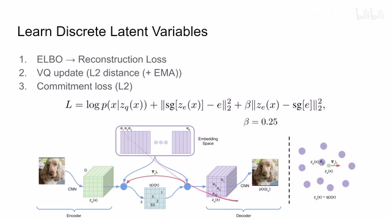
00:09:00–00:09:01 · 画面 03500:09:01–00:09:03 · 画面 036
00:09:01–00:09:03 · 画面 03600:09:03–00:09:06 · 画面 037
00:09:03–00:09:06 · 画面 03700:09:06–00:09:11 · 画面 038
00:09:06–00:09:11 · 画面 03800:09:11–00:09:13 · 画面 039
00:09:11–00:09:13 · 画面 03900:09:13–00:10:00 · 画面 040
00:09:13–00:10:00 · 画面 040那么当然你可以在这个基础上再加这个 exponential moving average 这个东西，让它的过程呢变得更稳定。这里呢 sg 呢表示 stop gradient 停住基础的传递，所以你看到这个部分这个 loss 呢，它只是训练了这个 embedding，让我们的 embedding 呢能够跟上我们这些 encoder decoder 它们的进展。那第三个这里呢我们有一个 commitment loss。
你看到这里呢它呢是希望我们的这个 ze 也就是这个 encoder output 和我们的这个 embedding space 里面的这些这个 embeddings 啊他们呢尽量的靠近但是这个 loss 设计的用意呢更多是像一种 regularization 它让我们的这个 encoder 出来的结果呢不至于太过的偏离比如说你的这个 embedding space 啊大家都是-1 到 1 之间的你这儿好冒出来个 100
00:10:00–00:10:01 · 画面 041
00:10:00–00:10:01 · 画面 04100:10:01–00:10:39 · 画面 042
00:10:01–00:10:39 · 画面 042那这你再查了最近的这个 world embedding 那距离也很远那没什么意义所以呢这个呢算某种程度上的 regulation 那么接下来呢我们就要重点关注这个 elbo 它本来是有两个这个 loss 那现在为什么它变成了这个样子那变成这个样子之后我们优化的对象有没有变那么下面呢我们继续来看首先呢我们来快速回顾一下这个 vae 我们这里有 losstheta 呢是 decoder 的参数 fi 呢是这个 encoder 的参数
00:10:39–00:10:54 · 画面 043
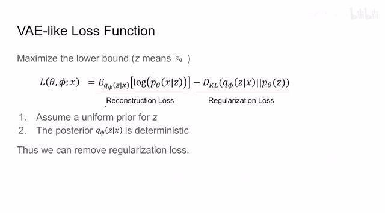
00:10:39–00:10:54 · 画面 043x 是我们输入的样本，那么写出来 loss 有一个 reconstruction loss 对吧？我们希望期望尽量的大，同时 regularization loss 我希望 KL divergence 尽量的小。前面这部分我们刚刚也看到了，就直接保留下来了，它没有什么变化。因为这里你可以看到我们希望 decoder 能够从 latent representation 中还原出尽量多的信息，这一块我们是不用动的。
00:10:54–00:10:55 · 画面 044
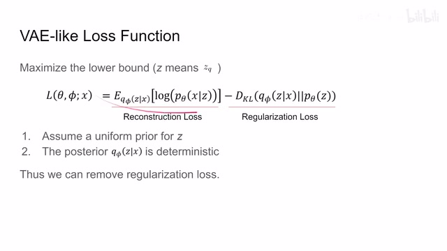
00:10:54–00:10:55 · 画面 04400:10:55–00:11:40 · 画面 045
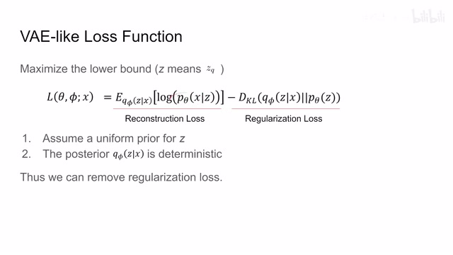
00:10:55–00:11:40 · 画面 045而对于我们的 encoder 呢所以呢我们有一些假设比如说因为这个 z 我们是定义的这个离散空间我们就假设这个 z 呢它是均匀分布的然后同时呢我们注意到这个 posterior 你无论这个 encoder 怎么改它的影响呢是这个 ze 也就是 encoder 的输出但是你从这个 encoder 的输出到我们真正的这个 latent representation 也就是这里从 ze 到 zq
00:11:40–00:11:49 · 画面 046
00:11:40–00:11:49 · 画面 046你中间需要查最近 0 查出来之后呢，是从这个 embedding space 里面去拿我们这个 zq 的。所以呢，这里呢 encoder 的参数呢并不能对我们的这个 zq 它的 distribution 产生影响。所以这个 recognition loss 呢，在这里是个常数弄它呢是没有意义的。我们呢就可以把它拿去了，剩下呢就是 reconstruction loss 了。那么再往下看我们这个 reconstruction loss 我们究竟优化了些什么东西呢？这里呢我们用一个 log likelihood。
00:11:49–00:12:06 · 画面 047
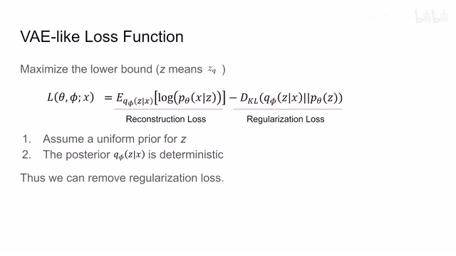
00:11:49–00:12:06 · 画面 04700:12:06–00:12:10 · 画面 048
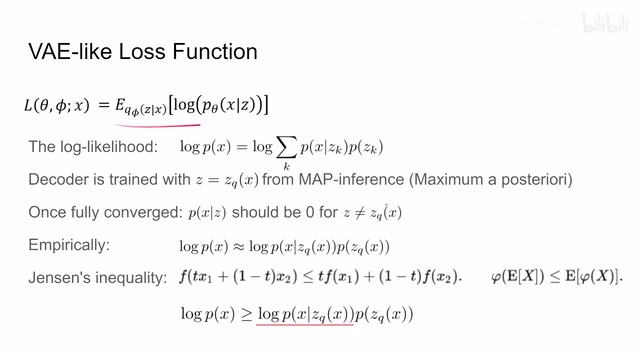
00:12:06–00:12:10 · 画面 04800:12:10–00:12:16 · 画面 049
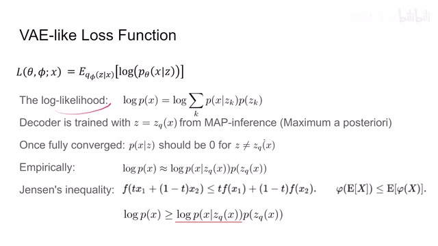
00:12:10–00:12:16 · 画面 049来去评估我们的这个模型的效果那么根据定义呢我们把这个 log likelihood 写出来那这里呢对每一种 z 来积分因为这个 z 是离散的嘛所以这个地方是一个求和了就不是积分那么定义呢就是这个样子那么下面呢我们看到因为我们的 decoder 呢训练的时候呢适用的是这个 zq 而这个 zq 呢是从我们这个 embedding space 里面从这个 e 里面拿的
00:12:16–00:12:17 · 画面 050
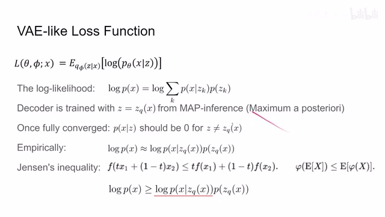
00:12:16–00:12:17 · 画面 05000:12:17–00:12:28 · 画面 051
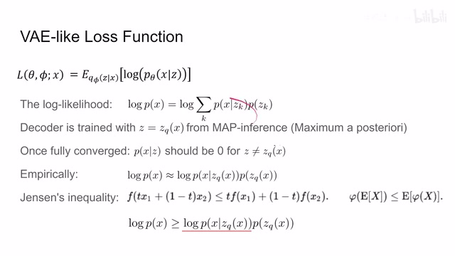
00:12:17–00:12:28 · 画面 05100:12:28–00:12:29 · 画面 052
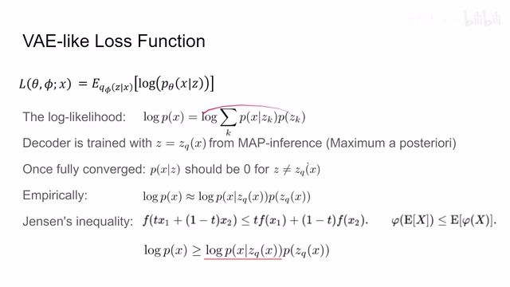
00:12:28–00:12:29 · 画面 05200:12:29–00:13:35 · 画面 053
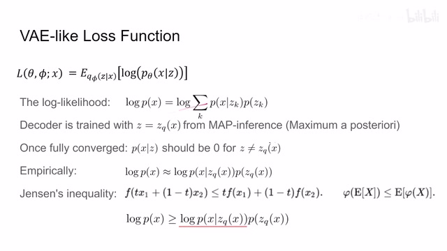
00:12:29–00:13:35 · 画面 053而且呢我们每次确定只拿某一个这个 E 呢是离我们的 encoder 编码出来的这个结果 ZE 最近的这么一个 embedding 或者应该叫这个 prototype 这个东西那么一旦这个模型收敛之后呢我们对于每一种 X 呢每次呢都一定会导到某一个这个 ZK 因为我们之前的这个编码的过程是 deterministic 的是确定的然后呢从这个 ZK 再重建回 X 的时候呢它也是确定的所以当这个 Z 不等于这个 ZQgiven 这个 X 的时候呢那么它的这个概率呢应该就是 0 所以呢上面这个式子这个求和整个这个式子你就可以把它退化成这样一个式子就只对我们实际编码这个 ZQ 只对我们实际编码这个 ZQ 它来计算我们的这个 log likelihood 就可以了
作者呢说 empirically 这个呢是成立的。那同时呢我们再回到上面这个式子，我们用这个 Jensen 这个不等式，它本质就是这个关于图函数这个性质嘛，或者说你写成这个概率论的这个形式呢就是长这个样子。这里呢这个 f 呢就是我们这个 log 函数对吧，这个求和。
00:13:35–00:13:36 · 画面 054
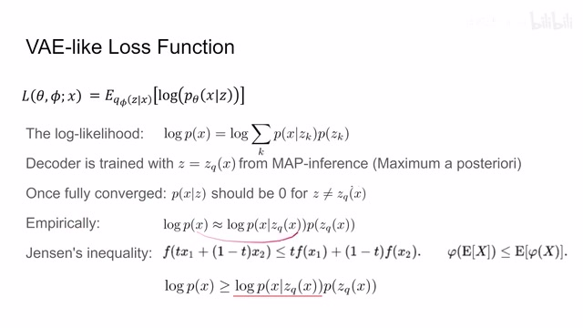
00:13:35–00:13:36 · 画面 05400:13:36–00:13:43 · 画面 055
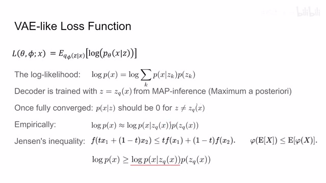
00:13:36–00:13:43 · 画面 05500:13:43–00:13:44 · 画面 056
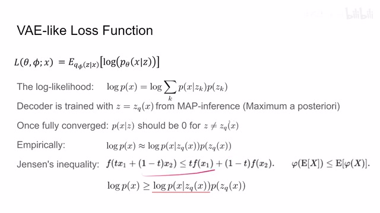
00:13:43–00:13:44 · 画面 05600:13:44–00:13:47 · 画面 057
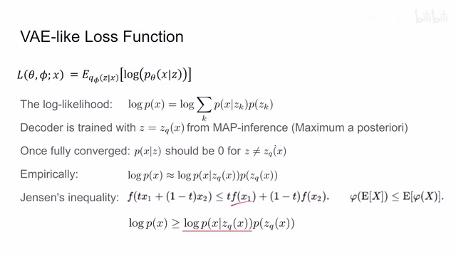
00:13:44–00:13:47 · 画面 05700:13:47–00:13:49 · 画面 058
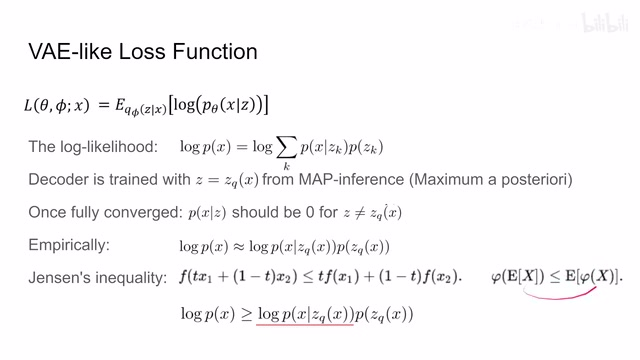
00:13:47–00:13:49 · 画面 05800:13:49–00:13:57 · 画面 059
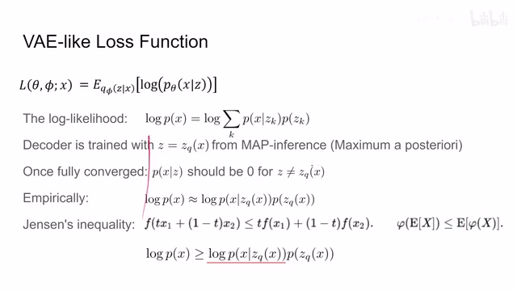
00:13:49–00:13:57 · 画面 059那么根据不等式因为 log 是一个上突的这么一个函数所以左边这一项作为两个点或者很多的点之间中间的某一点它应该大于等于这个端点的线性差不而是一个个端点呢我们来到这个形式我们把这个系数 t 看作是这个 zk 它的这个概率把这个 x 呢就看作这个那显然呢我们把这个式子换到这边来这个 f 对应了这个 log
00:13:57–00:14:07 · 画面 060
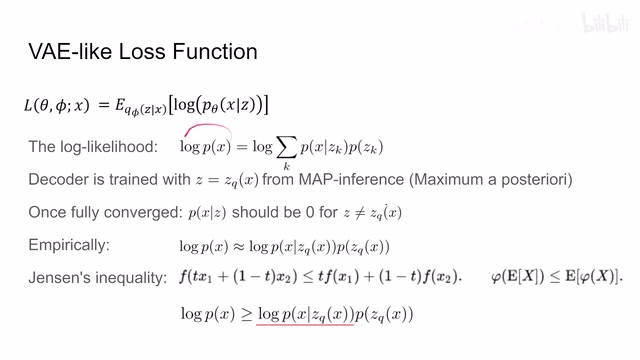
00:13:57–00:14:07 · 画面 06000:14:07–00:14:08 · 画面 061
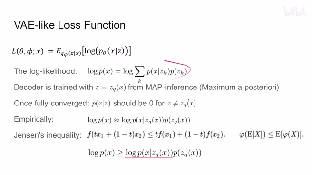
00:14:07–00:14:08 · 画面 06100:14:08–00:14:18 · 画面 062
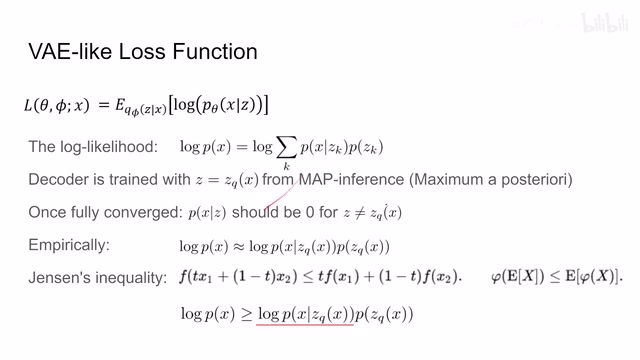
00:14:08–00:14:18 · 画面 06200:14:18–00:14:19 · 画面 063
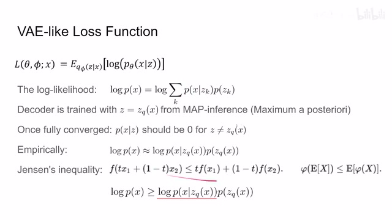
00:14:18–00:14:19 · 画面 06300:14:19–00:14:45 · 画面 064
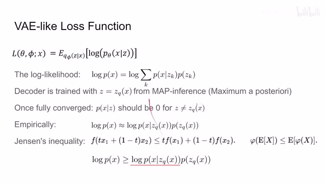
00:14:19–00:14:45 · 画面 064log 这个 p 这个条件概率那么它呢对应的就是这里的 fx1 那么这个 t 就是我们这个概率拿出来那同样的因为我们之前说的这个模型收敛之后整个这个模型应该是一个 deterministic 的模型它不存在这个随机抽案的过程所以呢整个这一个球核又可以退化成只有一个 zq 这样一个情况于是呢就得到了这样一个形式这里红线表示 log 向到此为止啊外面只是它的一个系数那所以呢你可以看到这说明了什么说明我们的 loss 呢它存在一个 upperbound 对吧在这里算是一种挺有意思的解读吧虽然不是说非常非常的严谨啊好的那么以上就是本文重要的技术细节了那么下面我们快速的做一个回顾说说是 loss 这方面 loss 有三个 loss 一个是 elbo 我们刚刚讲的只剩下一个 reconstruction loss
00:14:45–00:14:47 · 画面 065
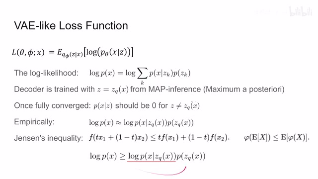
00:14:45–00:14:47 · 画面 06500:14:47–00:14:53 · 画面 066
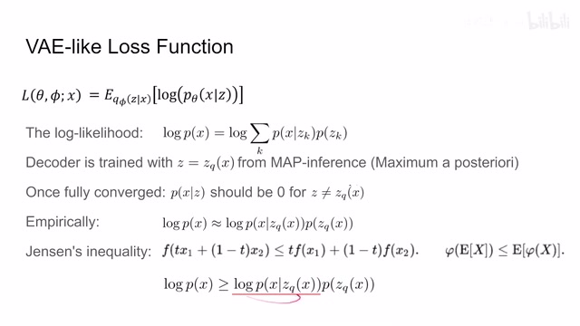
00:14:47–00:14:53 · 画面 06600:14:53–00:14:54 · 画面 067
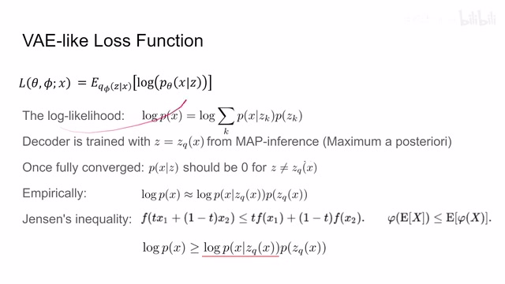
00:14:53–00:14:54 · 画面 06700:14:54–00:15:06 · 画面 068
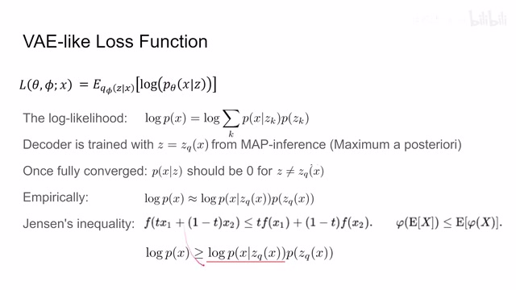
00:14:54–00:15:06 · 画面 06800:15:06–00:15:41 · 画面 069
00:15:06–00:15:41 · 画面 069它呢原本只是用来优化这个 decoder 做着说我们把这个 encoder 一块优化了吧不然没人优化它了但是呢如果你想这么优化的话那存在一个问题就是中间这个查最近的过程它是不可以传递梯度的啊这里呢做的解方案呢就是把梯度直接复制过来用这个函数值去替换这个函数值而保持这个梯度的值不变那具体的实现呢可以看到这里这个 context 呢可以理解为这个 zqinput 呢可以理解为这个 ze
00:15:41–00:15:42 · 画面 070
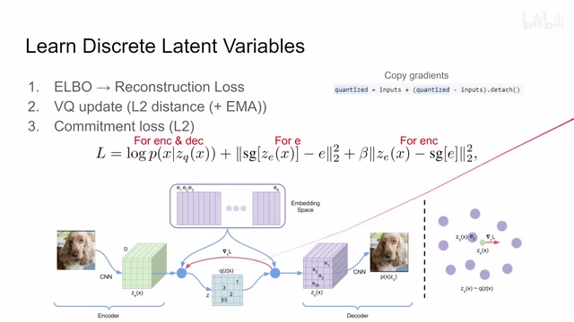
00:15:41–00:15:42 · 画面 07000:15:42–00:15:51 · 画面 071
00:15:42–00:15:51 · 画面 071通过这样一通操作哎就把本来 zq 上传递的这个梯度顺理成章的给它继承到了这个 input 上面啊非常巧妙的一个实现啊就像这个图所表示的啊我们的这个 ze 可能在这里我们的 zq 呢其实是在这里这 e 呢都是我们的 prototype 对吧我们的 ze 呢找到最近的这个 prototype 在这里那么这个时候呢我们在传递梯度的时候呢我们需要 e2 的这个函数值同时呢要求导数值
00:15:51–00:16:24 · 画面 072
00:15:51–00:16:24 · 画面 072这里的解决方案就是我用 ZE 它的函数值去代替 E2，也就是 ZQ 它的函数值，而导数值保持无变。那么再往下，我们优化了 decoder ，优化了 encoder，我们 embedding space 里面的这些 prototypes 也要优化。
00:16:24–00:16:26 · 画面 073
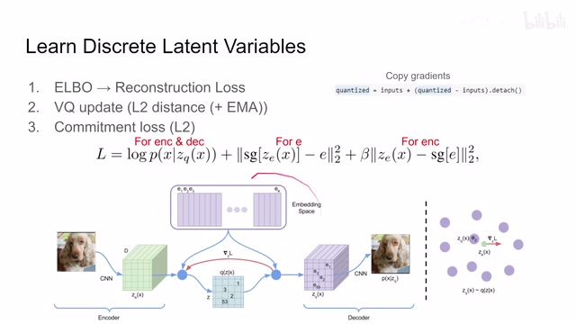
00:16:24–00:16:26 · 画面 07300:16:26–00:16:33 · 画面 074
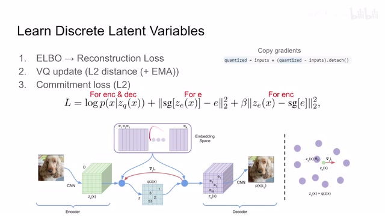
00:16:26–00:16:33 · 画面 074一个 L2 distance，最后这个 regularization 用它来规制一下这个 encoder。那么总的来说，这个就是本文的核心了，你可以用它去做 image，可以做 video，可以做 audio。关于它的实现包括后面很多的应用，感兴趣的朋友非常推荐你去原文查看。好的，那么以上就是我对这篇论文的一个简单的介绍，感谢您的收看，再见。
00:16:33–00:16:35 · 画面 075
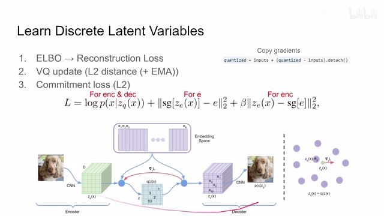
00:16:33–00:16:35 · 画面 07500:16:35–00:16:52 · 画面 076
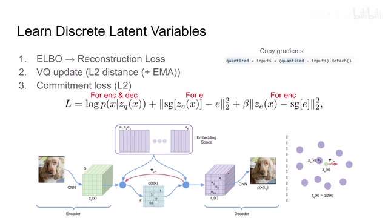
00:16:35–00:16:52 · 画面 07600:16:52–00:16:52 · 画面 077
00:16:52–00:16:52 · 画面 077转写与来源说明 · 1 个自动复核提示
保留 78 个原始语音片段，1 个片段触发自动复核提示。提示仅用于定位可能的术语、重复或识别问题，不等于已确认错误。
讲解画面为源视频截图（640×360），不是可编辑 PPT 文件。全片按每秒 2 帧扫描内容变化，逐步展开页保留；连续动画保留代表画面。清晰度受源视频限制。
原视频：paper/合集_2026-10-16_内容生成/[论文简析]VQ-VAENeural discrete representation learning[1711.00937].mp4
SHA-256：c86691a7f50a699eac72b45a61d1b20dcffd803d311c2cad236e39ead8596b98
Discrete Latent Variables
全文按视频语音与画面制作。原论文可从上方链接下载；完整资料包保留全文、原始逐字稿、字幕和校对记录。